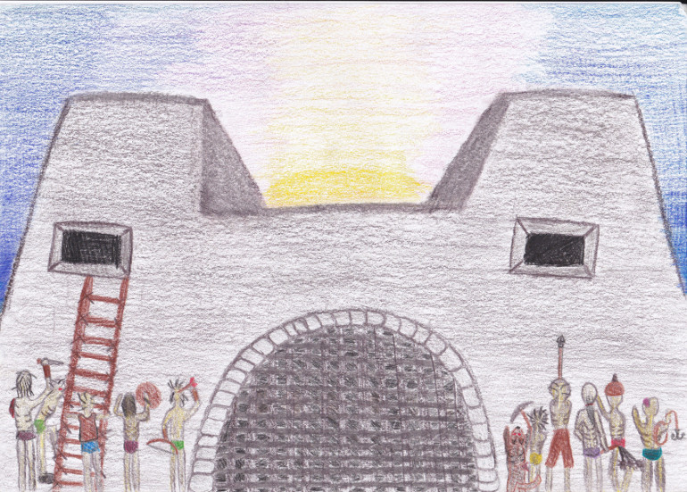
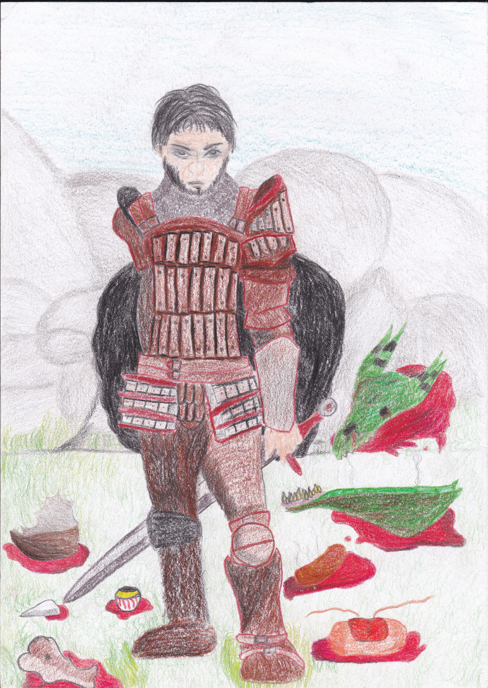

<h1>Fotky</h1>
<div class="clickable">
    <a href="fotky1.html"><h2>Akon I:</h2></a>
    <a href="fotky1.html"></a>

    <a href="fotky2.html"><h2>Akon II:</h2></a>
    <a href="fotky2.html"></a>

    <a href="fotky3.html"><h2>Akon III:</h2></a>
    <a href="fotky3.html"></a>

    <a href="fotky4.html"><h2>Akon IV:</h2></a>
    <a href="fotky4.html"></a>

    <a href="fotky5.html"><h2>Akon V:</h2></a>
    <a href="fotky5.html"></a>
</div>

<div id="galeria">
</div>
